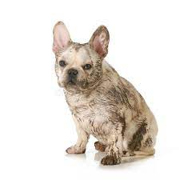
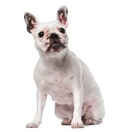
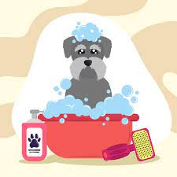
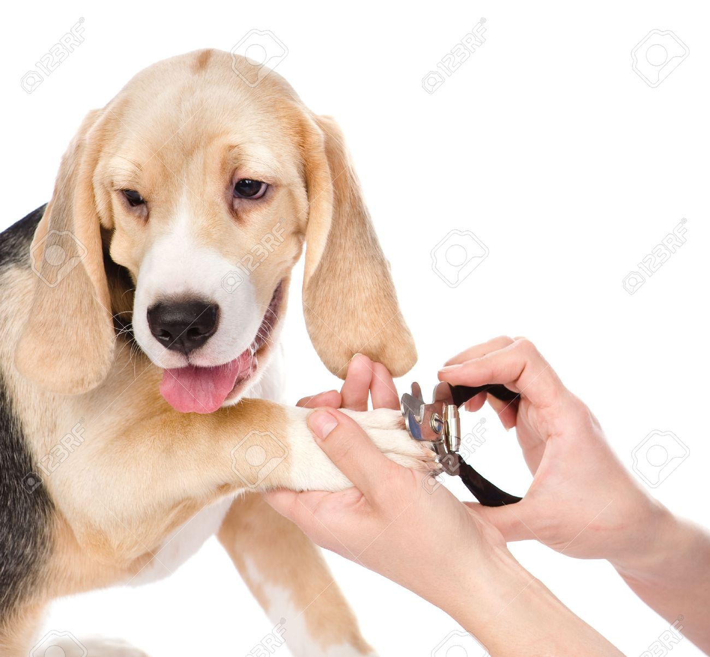
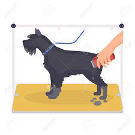
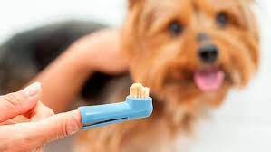
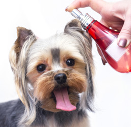

El pelo corto en perros es aquel que mide entre 1 y 4 centímetros de largo. Su apariencia suele ser lisa. Esta tipología es la más común. Este pelaje es el más sencillo de cuidar, no necesita cepillados o baños tan frecuentes y no resulta difícil mantenerlo libre de parásito.
|  |  |
EL COSTO VARIA DEPENDE AL ESTADO DEL PELO DEL PERRO PERO EL PRESUPUESTO ES ENTRE 60Bs a 120Bs
|  |  |  |  |  |